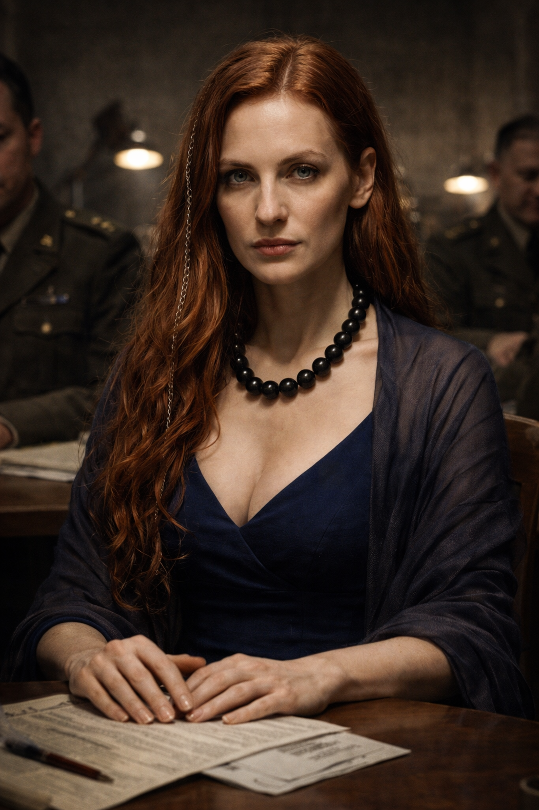

×

Мереана
- Полное имя: Неизвестно
- Вид: Человек
- Пол: Женский
- Возраст: Около 30 лет
- Статус: Жива
- Род занятий: Лже-экстрасенс, «специалист по психоэмоциональным следам»
- Первое появление: Глава 28
На данном сайте содержится информацию о произведении "От предвечной Тьмы к лунному Свету". Среди этой информации имеется большое количество сюжетных спойлеров.
«Я работаю с психоэмоциональными следами. Страх, вина, навязчивые идеи. Иногда они говорят больше, чем любые отчёты».
— Мереана во время своего представления в штабе.
Мереана — самопровозглашённый специалист по экстрасенсорике и психоэмоциональным состояниям, приглашённая в оперативный штаб по поимке Чайного Мстителя. Как и её коллеги, она была официально признана шарлатанкой, однако, в отличие от них, была немедленно удалена из штаба из-за деструктивного влияния на дисциплину личного состава.
Мереана — женщина с эффектной внешностью, которую она подчёркивала вызывающими нарядами, совершенно неуместными в условиях военного объекта.
Мереана позиционировала себя как эксперта, способного считывать «психоэмоциональные следы» — страх, вину и навязчивые идеи. Она обладала спокойным, оценивающим взглядом и лёгкой, заговорщицкой улыбкой.
Заявленные (фиктивные) теории:
Мереана была приглашена в секретный НИИ по распоряжению высшего руководства вместе с Магистром Сигизмундом и Вороном. Однако её присутствие в штабе быстро стало проблемой для руководства операции. Полковник Беловец докладывал, что Мереана «разлагает дисциплину»: её внешний вид отвлекал офицеров и аналитиков, вызывая среди них «павлинство».
Провал проверки: Чтобы подтвердить способности приглашённых экспертов, полковник Беловец провёл тест: экстрасенсам предложили угадать, что находится в закрытом ящике. Мереана, как и её коллеги, не смогла определить, что внутри лежит обычный канцелярский степлер.
Последствия: После провала теста заместитель министра обороны отдал приказ немедленно убрать Мереану из штаба, заявив: «Пусть ищет ухажёров в другом месте». В отличие от Сигизмунда и Ворона, которых оставили «для вида», чтобы не нарушать приказ министра, её пребывание сочли недопустимым из-за вреда дисциплине.